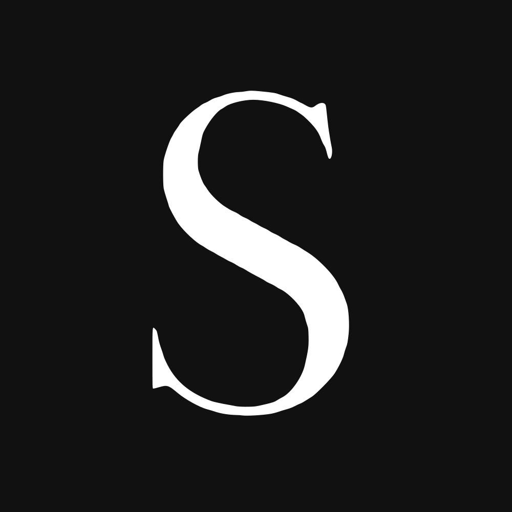
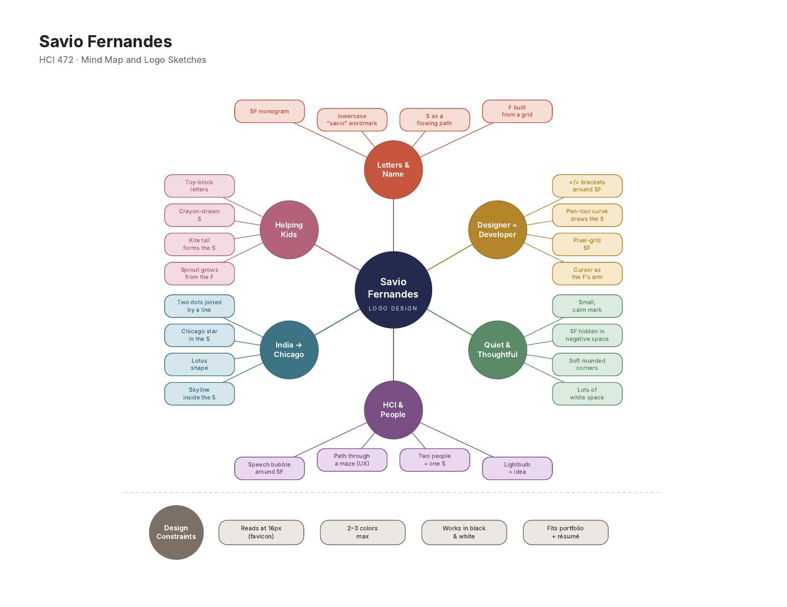
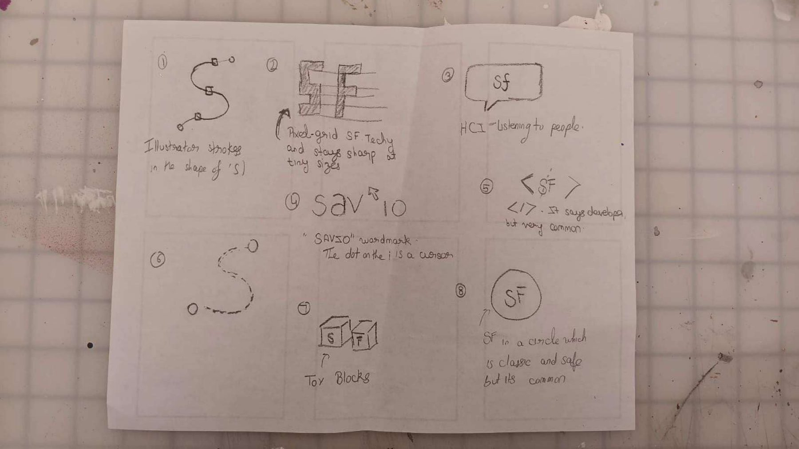
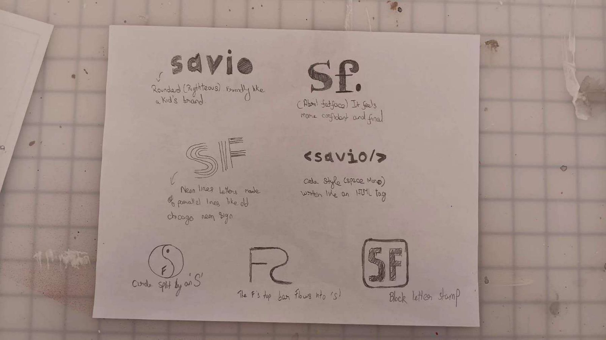
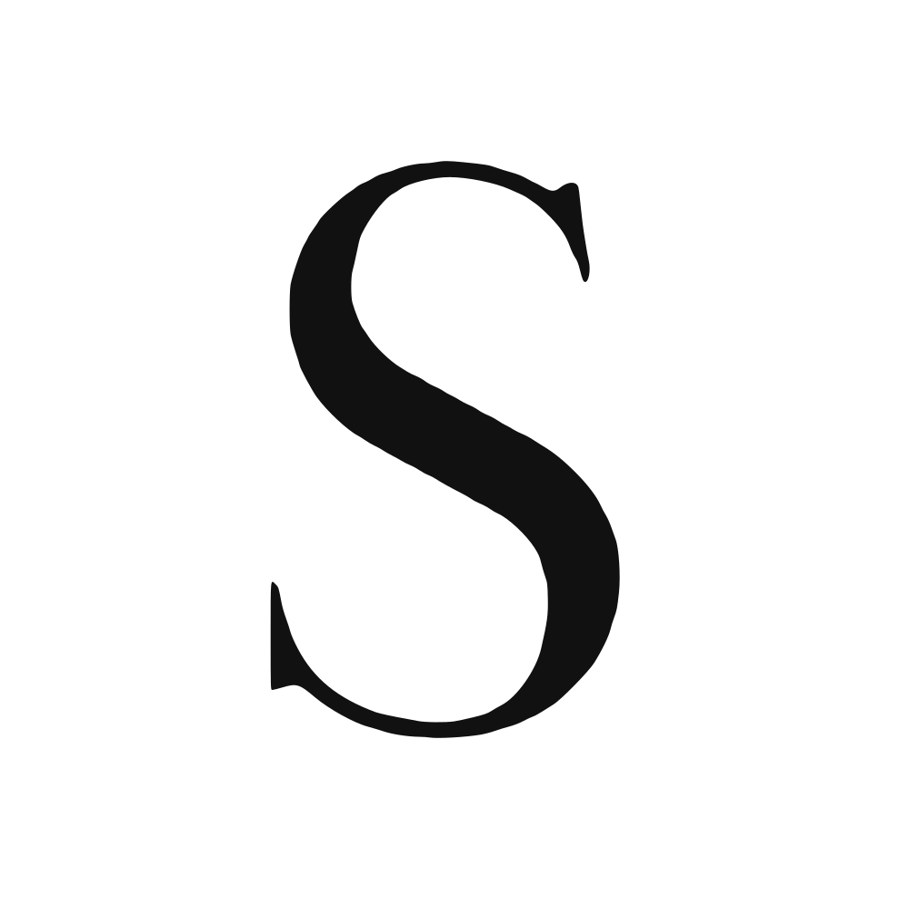
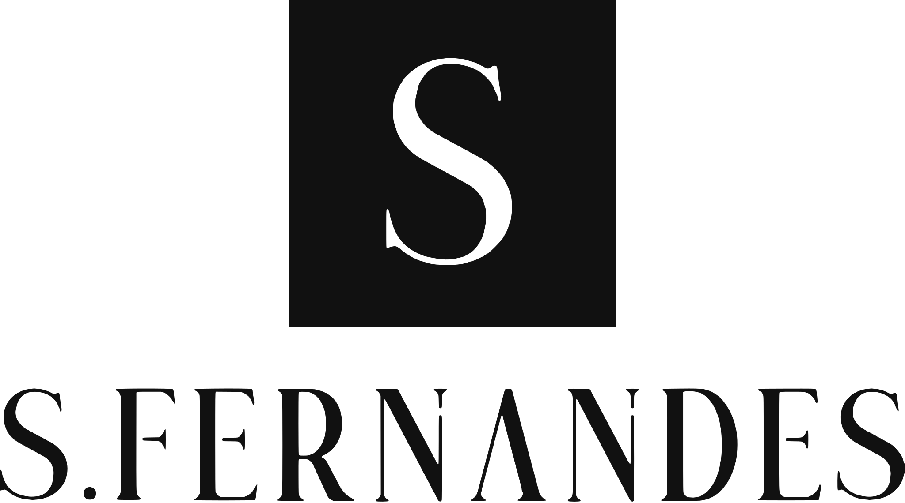
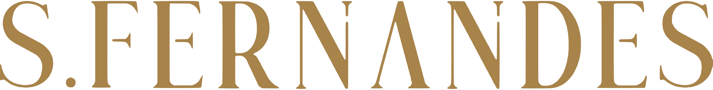
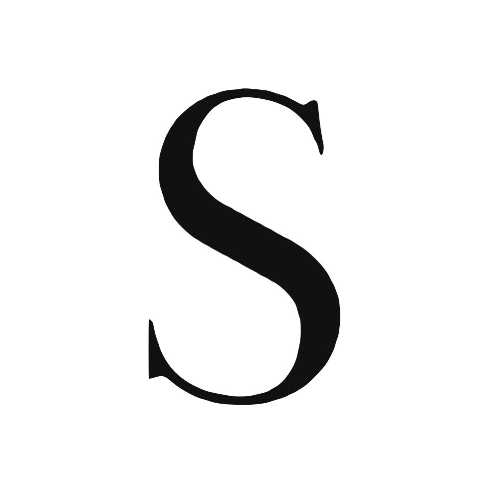
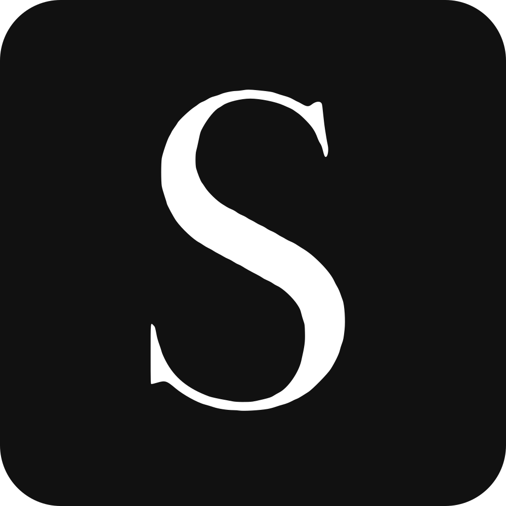

A quiet, editorial identity for Savio Fernandes: a single serif S for small spaces, and a full wordmark for everything else.
My mind map kept coming back to two ideas: my name and being quiet and thoughtful. I wanted a mark that doesn’t shout. It uses lots of white space, high contrast, and one strong letter.

I started with a mind map about who I am, then drew numbered thumbnail sketches by hand. I explored pen-tool curves, pixel grids, code brackets, and letter-only marks. In the end I came back to a serif S and wordmark I had designed earlier. The sketches confirmed what I liked about it: the strongest ideas were simple, letter-based and worked in black and white, like the fat “Sf.” and the block-letter stamp.




Every version comes as an SVG (sharp at any size) and a PNG with a transparent background.




The S mark at real browser sizes. Its thick strokes and solid square keep it readable at 16 pixels.

16px<link rel="icon" href="favicon.svg" type="image/svg+xml"> <link rel="icon" href="favicon.ico" sizes="any"> <link rel="apple-touch-icon" href="apple-touch-icon.png">
Two main colors and one accent, nothing more. Click a swatch to copy its hex code.
High-contrast display serif with a custom crossbar-free Λ. Always use the logo files, never retype it.
Same high-contrast style as the wordmark, for titles.
A neutral sans that stays out of the way, for paragraphs and UI.
Keep empty space around the logo equal to half the height of the S mark (x) on every side.
Wordmark: 120px wide on screen, 30mm in print.
S mark: 16px on screen, 6mm in print.
| Where | Use | File type |
|---|---|---|
| Website, portfolio, print | Primary lockup or wordmark | SVG (scales cleanly) |
| Docs, slides, résumé | Wordmark, black | PNG (transparent) |
| LinkedIn, GitHub, Figma profile | S mark, black | PNG |
| Browser tab | Favicon | SVG + ICO |
| Dark or photo backgrounds | Reversed (white) versions | SVG or PNG |
If “Copy” is blocked by your browser, right-click (or long-press) a logo and choose “Copy image.”